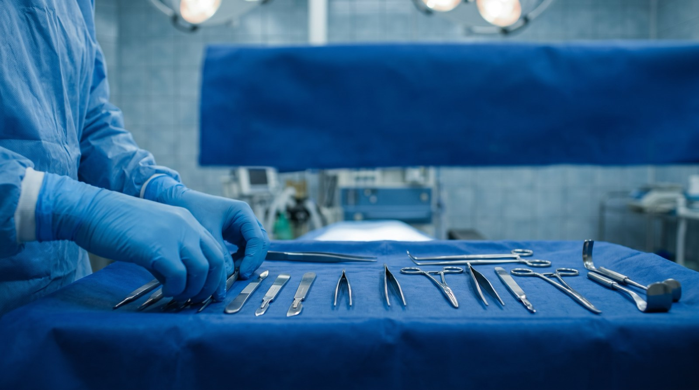

Breast surgery
Augmentation, lift, reduction and reconstruction. Sizing done with imaging so you see the projected outcome before deciding.
Board certified · ABPS
Aesthetic and reconstructive surgery in a private, accredited facility. The consultation is with the surgeon, it runs fifty minutes, and it ends with a written plan rather than a deposit request.

Services
A short list, deliberately. These are the operations performed often enough to be performed exceptionally.
Augmentation, lift, reduction and reconstruction. Sizing done with imaging so you see the projected outcome before deciding.
Abdominoplasty, liposuction and post-weight-loss contouring, staged sensibly rather than crammed into one operation.
Facelift, blepharoplasty and rhinoplasty. Conservative by philosophy — the aim is that nobody can tell you've had anything done.
Injectables, resurfacing and skin. Often the right starting point, and we'll say so when surgery isn't warranted yet.
Results
"The imaging meant I knew what I was choosing. No guessing."
Amara O. · Breast augmentation"He recommended less than I asked for. That's why I trusted him."
Kirsten V. · Facelift"Aftercare was as thorough as the surgery. Called me himself at day three."
Louise M. · Abdominoplasty"Private, discreet, and never once felt like a sales process."
J. R. · RhinoplastyProcess
Unhurried, private, and with the surgeon throughout. Most people are deciding over months, not days.
Fifty minutes with the surgeon. Examination, imaging where useful, and a frank conversation about what is and isn't achievable.
A written surgical plan and an all-inclusive quote — facility, anaesthesia and follow-up included, no line items appearing later.
Medical clearance, photographs and a second sit-down to confirm you're certain. You can change your mind at any point.
Accredited suite, board-certified anaesthesia, and a structured follow-up schedule out to one year with photographs at each stage.
Most of our patients thought about it for a year or more. A consultation commits you to nothing and is the fastest way to replace guesswork with facts.
Private consultations with no coordinator in the room and no decision expected on the day. All enquiries handled confidentially.